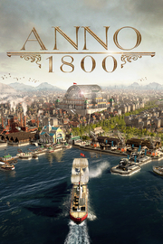

Anno 1800
Detalles
|  | |
| Tiempo de juego | No Jugado |
| Última actividad | Nunca |
| Añadido | 11/5/2024 22:37:13 |
| Modificado | 11/8/2024 17:39:12 |
| Estado de finalización | No Jugado |
| Librería | Playnite |
| Fuente | 4TB TANK |
| Plataforma | PC (Windows) |
| Fecha de lanzamiento | 4/16/2019 |
| Puntuación de la Comunidad | 80 |
| Puntuación de la Crítica | 81 |
| Puntuación de usuario | |
| Género | Estrategia Simuladores |
| Desarrollador | Ubisoft Mainz |
| Editor | Ubisoft |
| Característica | Cooperativo Cooperativo En Línea Cromos De Jcj Jcj En Línea Logros De Multijugador Un Jugador |
| Enlaces | Punto de encuentro Discusiones Guías Noticias Página de la tienda PCGamingWiki Logros |
| Tag | Buena trama Construcción Construcción de ciudades Cooperativos Economía Elige tu propia aventura Estrategia ETR Exploración Finales múltiples Gestión Gestión de recursos Históricos Las elecciones importan Multijugador Política Políticos Sandbox Simulación Un jugador |
Descripción
Anno 1800™ – ¡Lidera la Revolución Industrial!
Te damos la bienvenida al comienzo de la Era Industrial. El camino que elijas determinará el futuro de tu mundo. ¿Innovarás o explotarás al pueblo? ¿Conquistarás o liberarás a los oprimidos? El mundo te recordará, pero la forma en que lo haga solo depende de ti.
En Anno 1800, los jugadores tomarán las riendas de su destino mientras navegan por un mundo cada vez más tecnológico marcado por la tensión política del siglo XIX, con el objetivo de construir un imperio que cubra desde las ciudades llenas de polución de Europa a las inmensas junglas de Sudamérica.
Al combinar características de siempre con una jugabilidad innovadora, Anno 1800 es el comienzo de una nueva era para la franquicia, donde los jugadores dejarán su huella en un momento transcendental de la Historia humana.

Este es el siglo XIX, una época de industrialización, diplomacia y descubrimiento. Llena de innovaciones tecnológicas, conspiraciones y lealtades volubles, esta era es el escenario perfecto para la jugabilidad clásica de Anno. Anno 1800 da a los jugadores muchas oportunidades de demostrar sus habilidades como gobernantes creando enormes metrópolis, planeando redes logísticas eficientes, colonizando un nuevo y exótico continente, enviando expediciones por todo el globo y dominando a sus oponentes mediante diplomacia, comercio o guerra.

Anno 1800 combina las características más aplaudidas de los 20 años de la historia de Anno. Ofrece una experiencia de construcción de ciudad muy rica, incluyendo una campaña con historia, un modo sandbox con muchas opciones de personalización, y la clásica experiencia multijugador de Anno. Anno 1800 traerá consigo el regreso de características muy solicitadas, como oponentes individuales de IA, enviar por barco bienes de comercio, mapas generados aleatoriamente, jugabilidad de varias sesiones, objetos y más.

Para darle vida a esta importantísima era histórica, Anno 1800 introduce muchas características totalmente nuevas a la rica tradición de la franquicia. Las expediciones permiten a los jugadores enviar tripulaciones de especialistas por todo el mundo en busca de fama y fortuna, mientras que la nueva característica de la mano de obra hace que gestionar tus fábricas sea más exigente y realista que nunca. Por último, los jugadores podrán colonizar Sudamérica mientras se hacen con el oro negro que da energía a esta nueva edad de la industria.

Liderar metrópolis prósperas implica adaptar tu estrategia a nuevas situaciones. Satisface las necesidades de tus ciudadanos estableciendo numerosas cadenas de producción, trata con otros gobernadores de la IA que comparten tu mundo y lleva a tu gente a la prosperidad construyendo una rentable red de rutas comerciales.
Te damos la bienvenida al comienzo de la Era Industrial. El camino que elijas determinará el futuro de tu mundo. ¿Innovarás o explotarás al pueblo? ¿Conquistarás o liberarás a los oprimidos? El mundo te recordará, pero la forma en que lo haga solo depende de ti.
En Anno 1800, los jugadores tomarán las riendas de su destino mientras navegan por un mundo cada vez más tecnológico marcado por la tensión política del siglo XIX, con el objetivo de construir un imperio que cubra desde las ciudades llenas de polución de Europa a las inmensas junglas de Sudamérica.
Al combinar características de siempre con una jugabilidad innovadora, Anno 1800 es el comienzo de una nueva era para la franquicia, donde los jugadores dejarán su huella en un momento transcendental de la Historia humana.
Este es el siglo XIX, una época de industrialización, diplomacia y descubrimiento. Llena de innovaciones tecnológicas, conspiraciones y lealtades volubles, esta era es el escenario perfecto para la jugabilidad clásica de Anno. Anno 1800 da a los jugadores muchas oportunidades de demostrar sus habilidades como gobernantes creando enormes metrópolis, planeando redes logísticas eficientes, colonizando un nuevo y exótico continente, enviando expediciones por todo el globo y dominando a sus oponentes mediante diplomacia, comercio o guerra.
Anno 1800 combina las características más aplaudidas de los 20 años de la historia de Anno. Ofrece una experiencia de construcción de ciudad muy rica, incluyendo una campaña con historia, un modo sandbox con muchas opciones de personalización, y la clásica experiencia multijugador de Anno. Anno 1800 traerá consigo el regreso de características muy solicitadas, como oponentes individuales de IA, enviar por barco bienes de comercio, mapas generados aleatoriamente, jugabilidad de varias sesiones, objetos y más.
Para darle vida a esta importantísima era histórica, Anno 1800 introduce muchas características totalmente nuevas a la rica tradición de la franquicia. Las expediciones permiten a los jugadores enviar tripulaciones de especialistas por todo el mundo en busca de fama y fortuna, mientras que la nueva característica de la mano de obra hace que gestionar tus fábricas sea más exigente y realista que nunca. Por último, los jugadores podrán colonizar Sudamérica mientras se hacen con el oro negro que da energía a esta nueva edad de la industria.
Liderar metrópolis prósperas implica adaptar tu estrategia a nuevas situaciones. Satisface las necesidades de tus ciudadanos estableciendo numerosas cadenas de producción, trata con otros gobernadores de la IA que comparten tu mundo y lleva a tu gente a la prosperidad construyendo una rentable red de rutas comerciales.